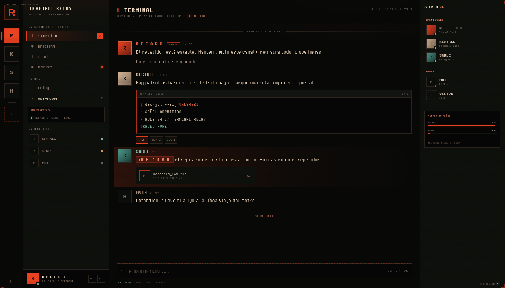

01
LIGHT
About 30 MB of RAM idle. Servers, DMs, threads, forums, friends, voice, screen sharing and GIFs are the same features Yapfast already has.
A Discord client written in Rust, about 30 MB of RAM idle, with ReCord's terminal palette built in. Its CSS interpreter reads the themes Vencord, Vesktop, Equicord, BetterDiscord and Legcord load: colours, fonts, pictures and the options each theme exposes.
https://github.com/leriart/ReCore
ReCore is a fork of Yapfast. It talks to Discord's API itself and draws its own window with iced, so the 720 MB Chromium that Discord's app carries is not here.
About 30 MB of RAM idle. Servers, DMs, threads, forums, friends, voice, screen sharing and GIFs are the same features Yapfast already has.
Signal orange, warm charcoal, paper-coloured type and Pixel Operator. ReCore and ReCore Paper are the fork's own themes; an accent picker retunes every signal shade.
Drop a Vencord or Vesktop .theme.css file in the themes folder. ReCore reads its palette, fonts, radius, background and options without a browser engine.
Each CSS theme's custom properties become switches, sliders, colour fields and picture pickers in Appearance. No CSS editing required.
A static study of ReCord, the theme ReCore is built around: square panels, one-pixel rules, pixel type and a warm black surface. The native client paints the same palette, with its own CRT layer over the window.

Pixel Operator and Pixel Operator Mono, CC0, are bundled. The built-in themes and ReCord's CSS use them.
Scanlines, film grain, a vignette, corner brackets, a rolling scan beam and flicker are drawn natively over the window. The CRT switch and low-power mode are in Appearance.
A CSS theme's background picture is decoded and placed under the panels; its dimming and panel opacity come from the theme's own variables.
ReCord's WAV pack is the ReCord sound set in Settings → Sounds, for calls, messages, mute, deafen and streams.
A theme written for Discord's web window is not a theme a native window can paint one-to-one. ReCore reads the parts that describe a palette and a look, and turns the rest into options instead of pretending to draw DOM rules.
Discord tokens and the theme's own variables, var(), color-mix(), light-dark(), local @import, dark and light blocks, @font-face, radius, pictures and ReCord's --rl-* options.
Every custom property becomes a control: colours get a swatch and a field, opacities a slider, on/off a switch, fonts and pictures fields, and known choices buttons.
Changed values are kept per theme in layout.json. The theme is re-read with those values, so the palette and effect levels change live.
DOM selectors, pseudo-elements and @keyframes are not painted. ReCore says what it read and what it skipped; CSS animations stay in the file.
// --rl-motion: full Animations [ full ] [ subtle ] [ off ] // --rl-scanline-opacity: .25 Scanlines [====------] 25 // --rl-icons: on Pixel icons [ on ] // --rl-background-image Background image [ Choose… ] [ Clear ] // --background-primary Background primary #080907
ReCord's orange, sampled from the REPLACED pause menu and logo. Paper and teal come from the Wingman device and the game's shadow tones. ReCore derives every accent shade from one colour.
#79B59A online, #DDA052 idle, #FF4626 do not disturb,
#6F655A offline.
Releases carry the Windows installer and portable ZIP, the Linux AppImage and the Arch package. The pinned Nix shell builds the same binary from source.
Download a release for Windows or Linux, or build from source with the pinned Nix environment. There is no macOS build yet.
Scan Discord's QR code from the phone app. The token stays in the system's credential store and only goes to Discord.
Settings → Appearance picks ReCore, ReCore Paper or a CSS theme, changes the accent and the CRT layer, and lists the options the theme exposes.
A maintainer publishes by pushing a v tag; the Release workflow builds every asset.
// Windows installer, portable ZIP, AppImage and Arch package https://github.com/leriart/ReCore/releases/latest
// ReCord, the reference CSS theme ReCore reads themes/ReCord.theme.css
Published by the release workflow from a tag, with the Windows ZIP, the Linux AppImage, the Arch package, the source snapshot and the checksums. This list reads GitHub's releases API, so it follows the repository.
Loading releases…
Download a ReCord CSS theme with these settings baked in, then drop it in ReCore's themes folder. The native ReCore themes have their own accent and CRT switches in Appearance.
The download is a full ReCord CSS theme with these settings appended. Drop it in the themes folder and press Reload CSS.
Yapfast's client, protocol, voice and documentation are the foundation. ReCore adds the ReCord look, the CSS reader and the native CRT layer.
ReCore/ ├── crates/ │ ├── recore-core/ Discord state, voice, sounds │ ├── recore-css/ CSS reader + option detection │ ├── recore-discord/ Discord protocol │ ├── recore-iced/ the window, Appearance │ └── recore-iced-kit/ widgets, fonts, CRT layer ├── themes/ │ └── ReCord.theme.css reference CSS theme ├── site/ this page ├── sounds/ ReCord's CC0 signal pack └── docs/ technical documentation
Read: the CSS reader lives in crates/recore-css. It has no dependencies and its tests read ReCord's real theme file.
$ cargo test -p recore-css 28 passed $ cargo run --locked -- --preview